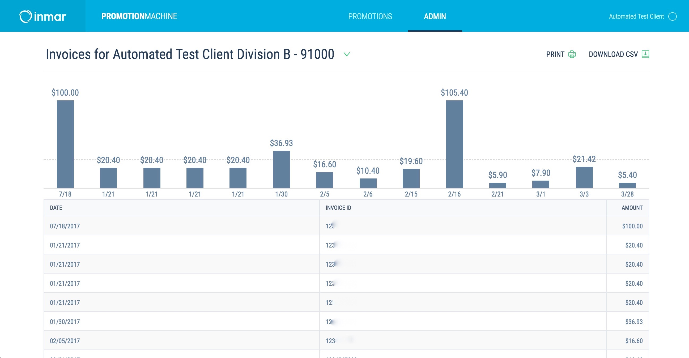
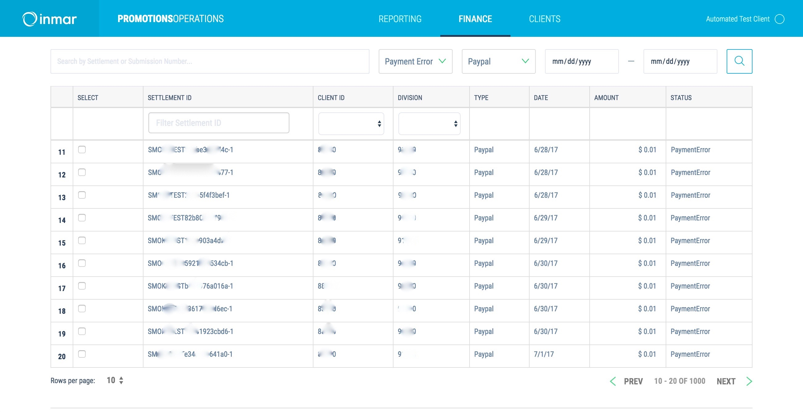
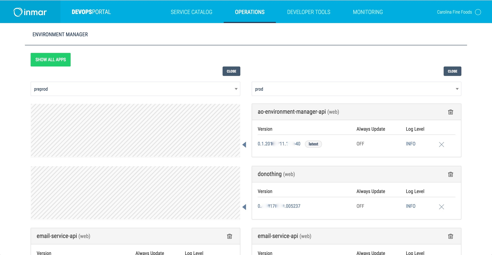

This slide intentionally left blank.
MicroSPA Architecture
The Journey so Far
Created by Jessica Kennedy / @mistersender
Who am I?
- Senior Software Engineer
- 10 Years + Development
- Polyglot org using MicroSPAs for ~2 years


What We Will Cover
- Definitions (MicroSPA vs Monolith)
- Strengths/Weaknesses of Each
- Pain Points of MicroSPAs
- Nuts & Bolts
- Our Solution
- Problems to Solve
Monoliths vs MicroSPAs
Monolith
- Single, large code base
- Many shared components
- Highly abstracted
Sample Monolith Repos:
- widgets_galore
MicroSPA
- Performs a singular business purpose
- Code base broken out into separate, distinct pieces
- Intended to work as part of a whole business solution, but can stand alone.
Sample MicroSPA Repos:
- widgets_galore_portal
- home_page
- sales_landing_page
- search
- checkout
- my_account
- update_user_info
Why Choose MicroSPA over a Monolith?
Ask yourself, which is more valued:
Speed or Agility?
Speed or Agility?
Speed
The strength of the Monolith
Tons of reusable features
Learning curve can be high, but lowers quickly over time.
Can move fast because of repetition & replicability.
Agility
The strength of the MicroSPA
Domain Understanding over Abstraction
Code is Replaceable.
Engineers focus on the Problem
Not becoming framework experts
Removes excuses for code abstractions
"Angular is hard. The Sr. Engineers will fix it."
Don't have to agonize over code decisions
- Frameworks?
- Libraries?
- Design patterns?
- Preprocessors?
- Build Processes?
Learning curve to start is lower
but requires agile engineers
Encourages Experimentation
Low-impact to try something in one MicroSPA
Stay Abreast of new Technology
Organically Retains Talent
Being able to stay on the cutting edge is important to employees' careers!
Attracts Great Talent
Offering a polyglot environment & freedom
Still Retain Best-Practices
We're not animals, after all
Site upgrades can be done in chunks
Or swarmed. Or not at all!
Rewrites can be done in chunks
Or Swarmed, or not at all!
Reinforces a backwards-compatible / graceful failure mindset
for any shared tooling among MicroSPAs
Quick, painless deploy process
Little to no coordination
No need for complex git methodologies
Merge conflicts rare
Merge conflicts rare
Specialization
Easier to own areas
The Pain Points
What We have not :heart:ed...
Adds Overhead
(To the first iteration)
Tooling & OOTB Solutions are Rare
How do they work together?
Different Problems
Adapting to the new problems is challenging
Component Upgrades
Context Switching
can be rough
Knowledge Sharing*
Getting Started
Build Something!
- Pick a domain problem.
- Build a simple SPA around it.
- Repeat.
Train yourself to NOT abstract immediately.
The more abstracted, the less likely to be agile.
What did you repeat?
- Will it make the solution cohesive?
- How difficult is this to recreate?
Those are candidates for abstraction.
Common Abstraction Candidates:
- CSS
- Navigation
- Headers/Footers
Our Solution
As an example
What our Team Does
Coupon Processing!
Sounds easy, right?
Client Apps (eg: Proctor & Gamble)
Internal Apps (eg: accounting and money flow)
Developer Tools (eg: deployment & monitoring)
Requirements
- Standalone Application
- Also works as part of a large application ("portal")
- Able to be reused in multiple "portals"
- Support ephemeral environment development
Shared Components
Most MicroSPAs are required to contain these components:
- Navbar
- Stylesheet
- Login
Component Requirements
- Typically Vanilla JS
- Namespaced
- Accepts configurations, especially of URLs
MicroSPA Requirements
- Single Point of Entry for JS
config.jsonat MicroSPA root- Inherits parent MicroSPA's
config.jsonby default - Generic
buildfile at site root
Build/CI Process
- Cloudformation file
- build file
- minimal, but powerful deployment tooling
Working Together
- Turbolinks for smooth transitions
- Consul keys for URL rewrites
- Shared parent config.json file
Problems to Solve
Big file sizes
Look & Feel Derails Easily
Communicating between SPAs
Forget to test in Portals
Because they can be standalone
Intelligent Commerce
Billions transactions and shopper engagements flow through our systems. For over 35 years, Inmar has been the leader in North America for managing promotional dollars, loyalty and shopper engagement; logistics and supply chain; and healthcare and pharmaceuticals.
We employ the best engineers across North America and the world to work on rich web and mobile applications, big data and real-time analytics, embedded and RF logistics for supply chain and warehouses, and more. If you think you have what it takes, apply to join the team!
Questions?
Twitter/Github:
@mistersender